Seamless fare payments across every mode of transport.
Led the redesign of a global white-label ticketing platform serving 3–5 million active users monthly — mobile-first, accessibility-driven, and built to be branded by transit agencies worldwide.
ClientMasabi · Justride
Year2023 — 2024
RoleSenior Product Designer
Duration17 months
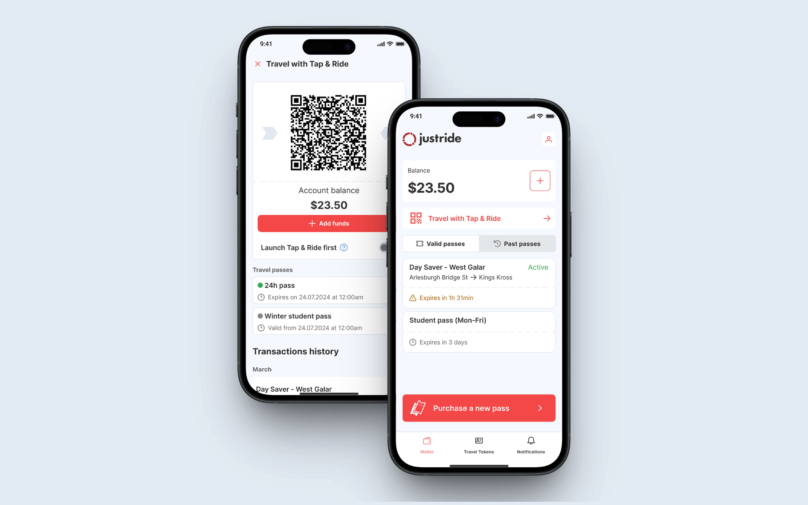
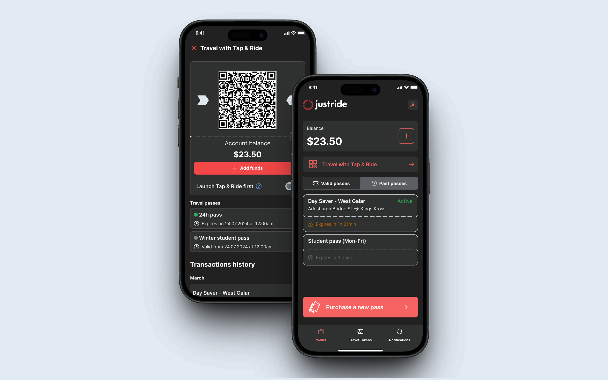
02 · Context
A platform serving millions, built to fit any agency.
Justride is an enterprise-grade, cloud-native ticketing platform that unifies mobile ticketing, contactless payments and account-based ticketing into a single product — used by transit agencies worldwide, serving 3–5 million active users every month.
I joined as design lead on a broad redesign effort, approaching it mobile-first with a clear goal: deliver a ticketing app that any transit agency could brand and deploy as their own. With such a diverse global user base, accessibility, ease of use and an intuitive system weren't nice-to-haves — they were foundational constraints.
One key challenge shaped the process throughout: our direct clients were the transit agencies, not the passengers. That meant rider insights came primarily through stakeholder meetings and agency-provided analytics, making it essential to define success metrics early and measure rigorously at every stage.
3–5MActive users every month across global markets
MobileFirst — across browser and native environments
White-labelAny agency can brand and deploy it as their own
A11yAccessibility as a foundational constraint
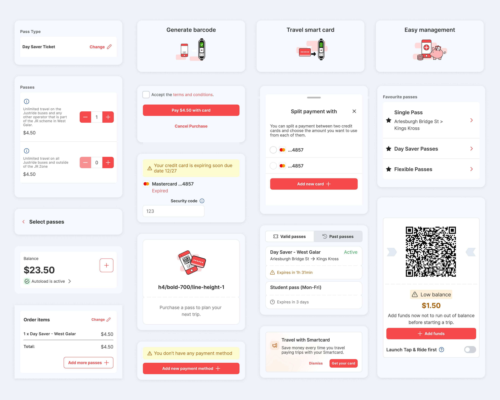
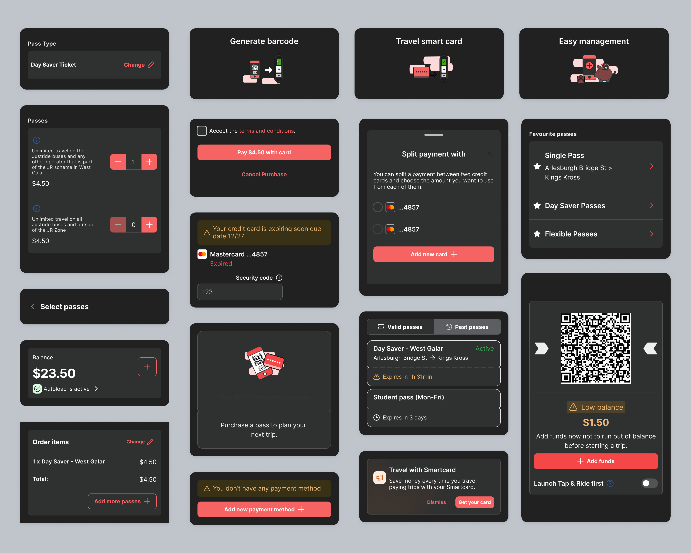
03 · Process
A four-stage structure built for an indirect user relationship.
Our direct clients were the transit agencies, not the passengers — so the process leaned on success metrics defined upfront and measured rigorously at every stage.
Stage 01
Analysis & metric definition
Reviewed existing data, agency research and usage patterns across platform features. Defined success metrics upfront — satisfaction scores, usefulness scores, completion rates and abandonment rates — so every design decision had something to be measured against.
Data review
Metric definition
Usage patterns
Stage 02
Iterative design collaboration
Worked closely within a multidisciplinary team across design, product and engineering. Iterated continuously, keeping agency requirements and passenger behaviour in parallel focus throughout.
Cross-functional
Continuous iteration
Dual focus
Stage 03
Validation through user testing
Tested designs with real users to pressure-test flows, surface friction and validate that the experience held up across the range of markets and agency brands we were designing for.
User testing
Friction surfacing
Cross-market
Stage 04
Measurement
Tracked the defined success metrics post-launch — completion rates, abandonment rates, satisfaction and usefulness scores — to evaluate the effectiveness of the new designs and feed learnings back into the next cycle.
Post-launch tracking
Effectiveness
Feedback loop
04 · Solution
White-label by design, consistent by principle.
The redesigned Justride platform delivers a responsive, multi-viewport experience — available in both browser and native mobile environments — that agencies can brand entirely as their own.
White-label theming
A Figma variables system that makes theming fast and testable.
This theming redesign proposed a simplified Figma variables system that lets agencies adapt the app to their own brand in just a few moves — taking the thinking and heavy lifting out of white-labelling. They can apply their own brand identity with minimal effort, without needing branding experts or system design work.
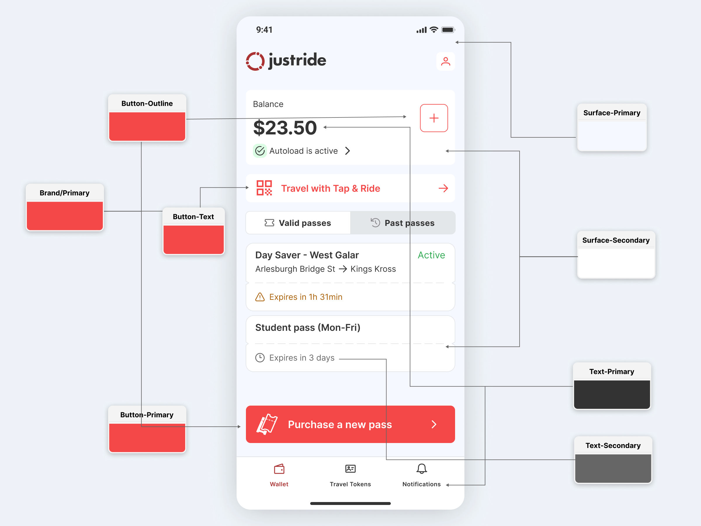
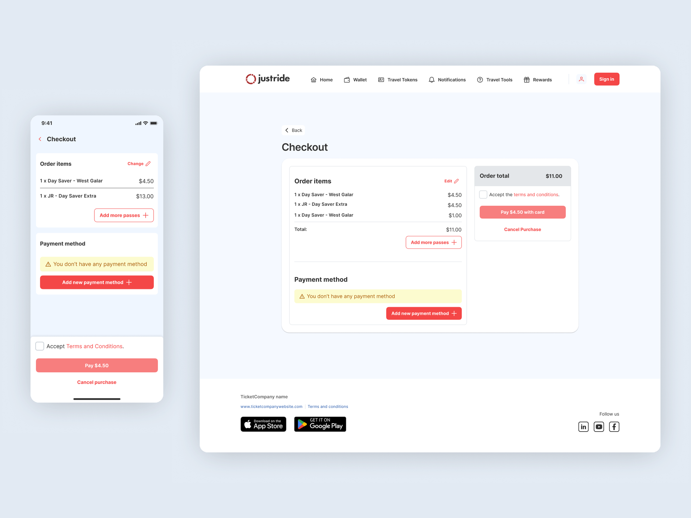
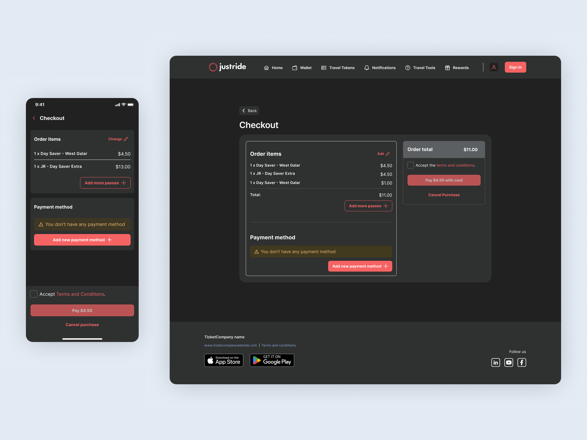
Responsive, multi-viewport
One experience, consistent across browser and native.
The platform adapts across viewports and environments — browser and native mobile alike — so the ticketing experience stays coherent however and wherever a rider reaches it.
Accessibility
Light and dark themes that stay fully usable.
Accessibility is baked into the approach rather than retrofitted, so both light and dark themes remain fully usable no matter how an agency customises them.
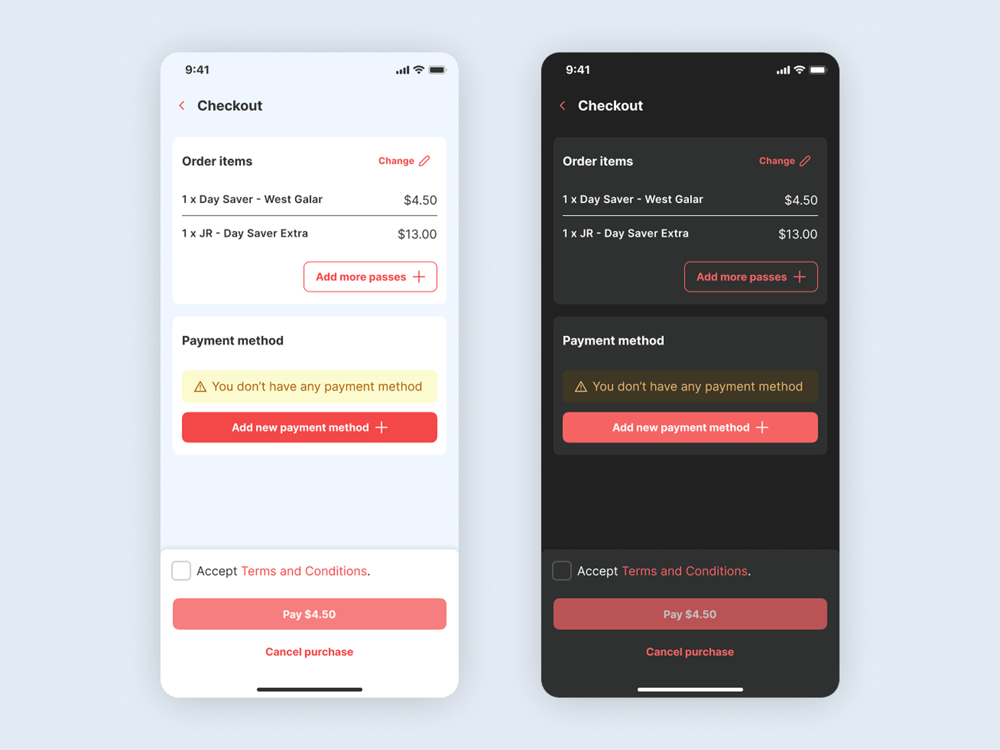
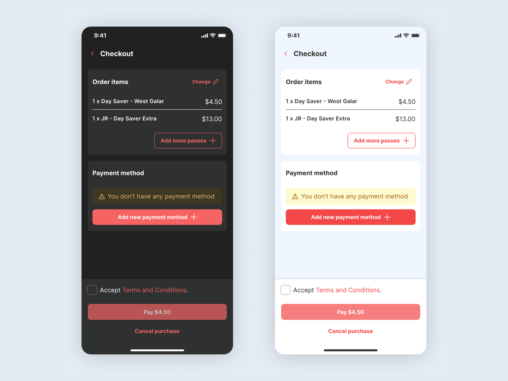
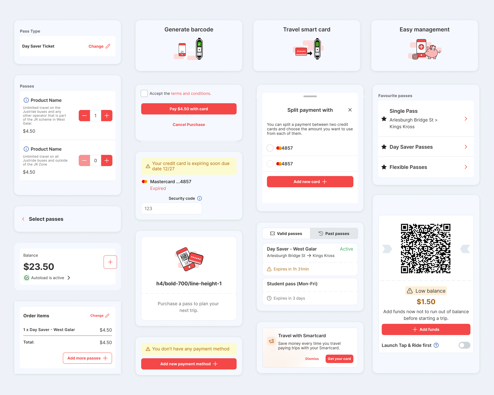
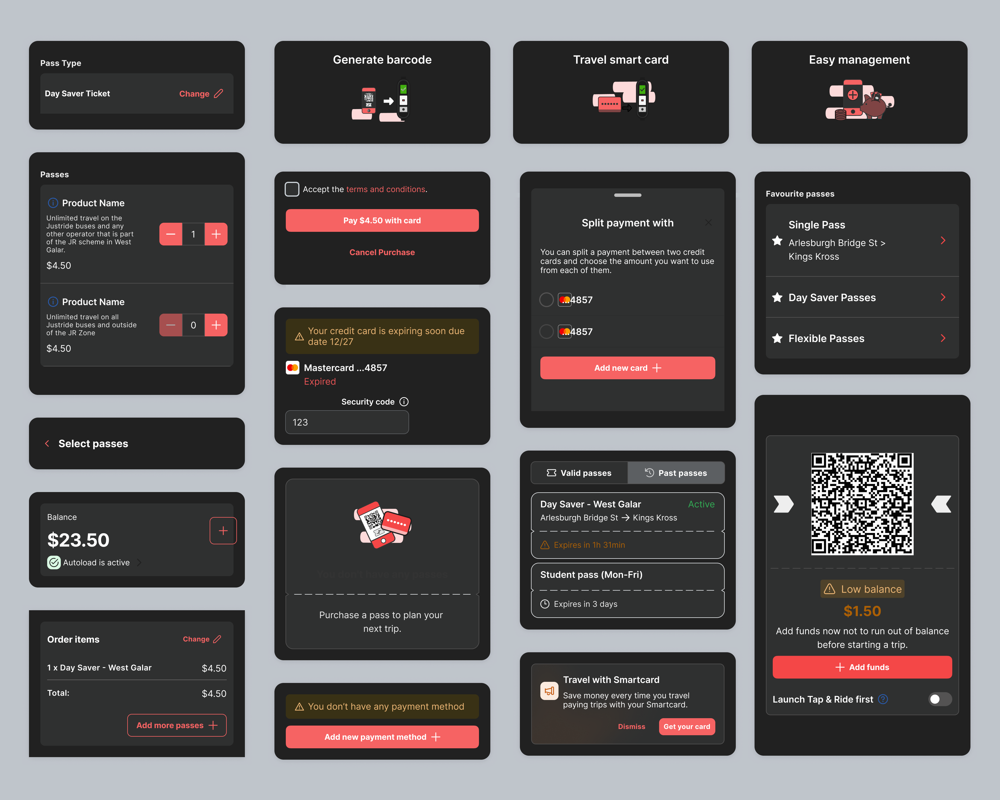
05 · Impact
A redesign felt by millions, adopted by agencies worldwide.
3–5M
Active users every month — every improvement ships to millions of riders who experience a smoother journey without ever noticing the work behind it.
For riders
Every improvement reaches millions — a smoother journey for people who never notice the design work behind it.
Designed for a genuinely wide demographic range — different ages, digital literacy levels, languages and accessibility needs across multiple markets.
Accessibility built in from the start — not retrofitted, so the experience holds up for the riders who need it most.
For transit agencies
A white-label platform they can brand and deploy as their own — without rebuilding from scratch.
Flexible enough to respond to new feature and service demands quickly — keeping pace with each agency's roadmap.
A Figma variables theming system — lets agencies customise freely while keeping accessibility intact across light and dark themes.
For the team
A repeatable four-stage design process — with predefined success metrics: satisfaction scores, usefulness scores, completion rates and abandonment rates.
A framework that outlives the project — and continues to guide future iterations.